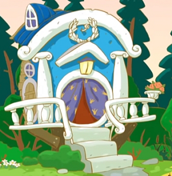

| Домик Кроша — двухэтажное здание, в котором проживает Крош. | ||
| Внешне данный дом отличается от остальных разнообразием цветов — его стены покрашены красками голубого, зелёного, розового и оранжевого цветов. Имеется два входа в данное помещение: внизу и наверху. Верхняя дверь соединена с землёй деревянной спиральной лестницей без перил, ступеньки которой окрашены в разные цвета. Также рядом с данной дверью находится маленький балкон. | Внутри здания находится четыре помещения. Первым является жилая комната, в котором царит беспорядок (который, впрочем, никак не мешает Крошу: он точно знает, в каком конкретно месте хранятся все его вещи). Среди всех вещей наиболее выделяется подвешенная к стене кровать Кроша, стол и игрушечная железная дорога. | |
| Домик Ёжика — одноэтажное здание, стоящее у моря. В нём живёт Ёжик. | ||
| Дом Ёжика выглядит как гриб. Крыша дома покрыта красной черепицей, а само здание бежевого цвета. На домике висит вывеска — очки. Крыльцо каменное, похожее на мост, так как рядом с домиком протекает речка, и крыльцо висит над ней аркой. Рядом с домом Ёжика находится небольшой фруктовый сад. Там растут яблони и груши. Также иногда там растёт морковь. Сад обнесён забором. | По натуре Ёжик очень тихий и аккуратный, поэтому ни одна вещь в его доме не валяется не на своём месте. Несмотря на это, Крош считает, что Ёжик дома не убирается. Ёжик — коллекционер, и его дом уставлен горшками с кактусами, грибами и ракушками. Кроме того, Ёжик очень любит читать и поэтому полки в его домике заняты книгами, расставленными по алфавиту или размеру. | |
| Домик Бараша — одноэтажное жилище Бараша. | ||
| Дом Бараша похож на маленький рыцарский замок и выглядит как небольшое каменное здание с небольшими завитушками на крыше (которые символизируют рога владельца помещения). Над дверью данного строения висит разбитое сердце (которое свидетельствует о романтической натуре обитателя данной постройки). Возле домика Бараша протекает ручей, а также стоит маленький фонтан. | Домик Бараша состоит из одного жилого помещения и ванной комнаты. В жилой комнате у двери стоят рыцарские доспехи, которые, предположительно, достались Барашу от его предков, входящих в Рыцарский орден. Рядом с ними находится шкаф, где хозяин жилища хранит свои литературные произведения. Присутствует декоративный камин. | |
| Домик Нюши — двухэтажное здание, в котором проживает Нюша. | ||
| Издалека домик Нюши похож на заварочный чайник. И ведь очень подходяще, потому что его хозяйка очень любит принимать гостей и угощать их чаем. Домик выкрашен в любимый Нюшин цвет — розовый, и украшен нарисованными ромашками. Также на домике висит вывеска-ромашка. Двор Нюши окружён невысоким белым забором. | Первый этаж является гостиной и кухней одновременно. Это круглая комната, обставленная в нюшином стиле. Среди вещей Нюши присутствует пишущая машинка марки Ундервуд. Шкафы имеют округлённые бока, как комоды и другая мебель. У стены находится лестница, ведущая на второй этаж. | |
|  | Домик Кар-Карыча — одноэтажное здание, в котором живёт Кар-Карыч. | |
| Снаружи дом напоминает загородную усадьбу XVIII века, в стиле «Задумчивое Барокко». Синие стены дома по бокам обрамляют ионические колонны. Над входом висит фонарь. С одного края на другой протянулась дугою валюта с завитушками на концах. А под нею прибит мраморный лавр. Крыша покрыта металлическими листами покрашенного в тёмно-синий цвет. На крыше можно увидеть окно, там находится чердак. | С особенной трепетностью Кар-Карыч относится к тем вечерам, когда на улице идет сильный дождь. Он включает патефон и погружается в прекрасный мир музыки. И пусть за окном сыро и зябко, зато в доме царит уют и покой, а в большом камине никогда не затухает пламя жаркого огня. Не стоит забывать про его любимую «королевскую» кровать, забавно скрипящую. | |
| Домик Лосяша — дом, в котором проживает Лосяш. | ||
| Снаружи дом Лосяша — это небольшая обычная лесная хижина, заросшая по бокам мхом. К нему прибиты деревянные рога сверху. С одной стороны из дома торчит труба, которую венчает синяя чашка, а на противоположной стороне на одном из рогов висит вывеска-книга. Это символизирует сущность и деятельность хозяина. | Зайдя в дом Лосяша, можно только удивиться тому, как всё это поместилось в маленькой хижине (конечно, можно предположить, что домик уходит вглубь и есть скрытая лестница в подвал, где находится лаборатория и душевая). Ведь здесь учёный не только живёт, но и проводит различные эксперименты. | |
| Домик Копатыча — деревянная изба, в которой живёт Копатыч. | ||
| Дом выглядит как большая изба. Над дверью висит тыква. Соломенная крыша «украшена» вилами и лопатой. Также видна печная труба. Сзади дома сделана пристройка, где хранятся бочки с мёдом и какие-то инструменты. Рядом с домом находятся колодец и деревянная кабинка туалета. В саду Копатыч строит фонтан в одноимённой серии. В серии «Большой переворот» выясняется, что в доме есть погреб. В него ведёт люк в комнате Копатыча. В погребе хранятся бочки, банки с вареньем и прочим (на полках), устройство для отпугивания кротов. Через этот погреб можно было пройти в тоннель, прорытый Пином и Крошем. | Если есть печная труба, то, конечно, есть и печь. А ещё стол, лавки и кровать. Иногда медведь спит на ней, а иногда на печке. В доме Копатыча много вещей, нужных для хозяйства. В каждой новой серии появляются новые предметы. Например, в серии «Кулинария» есть плита, длинный стол, раковина. Ещё в доме есть чердак, погреб. В доме находятся мешки, подковы, шкаф, полки, скамейки, вазы, цветы, стол, стул, печь, верстак с инструментами и ковёр. Возле входа постоянно можно заметить банку с клубничным вареньем и мешок с мукой, а также ящик с английской надписью «Bananas», который весьма часто мелькает на задних планах, когда события серий разворачиваются в доме у медведя. | |
| Домик Совуньи — высокое дерево, в дупле которого живёт Совунья. | ||
| Стоит только взглянуть на домик Совуньи, и сразу понятно — здесь живёт спортсменка. А иначе как объяснить, зачем ей на стене баскетбольная корзина? Здесь же расположен скоростной спуск с балкона дома Совуньи на землю — лыжная горка. | Представление от внешнего вида усиливается видом изнутри. Внутри дом разделён на «комнаты» занавесками. Доподлинно известно о трёх «комнатах». Первая — кухня, совмещённая с прихожей. Везде разложен спортивный инвентарь: футбольный мяч в углу, гирьки на шкафу, дартс на стене. | |
| Домик Пина — жилище Пина. | ||
| Домик Пина представляет из себя круглое строение, похожее на искусственный спутник, находящееся на большой высоте и удерживаемое там при помощи нескольких больших деревянных столбов. Рядом с домом находится подъёмник, с помощью которого Пин поднимается в своё жилище и доставляет туда или оттуда различные грузы. Дом Пина расположен на побережье. Рядом с ним располагается большой ангар, в котором пингвин работает и хранит свои инструменты. За ангаром находится большая свалка, на которую Пин выкидывает все свои неудавшиеся разработки. | Внутри домика есть много схем и приспособлений, а также холодильник, в котором спит Пин, потому что он пингвин и привык жить в холодной среде обитания. На выходе из дома установлена табличка «Уходя, гасите свет». Наличие работающего холодильника свидетельствует о том, что дом Пина подключен к сетям электроснабжения. Возможно, что источником энергии служат созданные им ветрогенератор и солнечная батарея, которые были показаны в эпизоде «Энергия храпа». В помещение есть система отопления с чугунными радиаторами, которая обычно отключена, так как Пин любит холод и спит в холодильнике. В доме Пина есть встроенный модуль, превращающий дом в корабль. | |